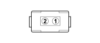

N070B INJECTOR (ENGINE)
- Path
- Electrical equipment > 3 CONNECTORS > N ELECTRIC MOTORS AND ACTUATORS > N070 INJECTOR > N070B INJECTOR (ENGINE)
- Kind
- connector pinout (pin -> wire colour -> other end)
- Applies to
- engines: 2.0 16V; all production periods; only with equipment: Climate control
- Interactive page
- https://sloeber94.github.io/elrnDB-fDct/en/#/244003591
Applies to: engines: 2.0 16V; all production periods; only with equipment: Climate control

Wiring | Colour |
|---|---|
NERO (black) |
Pin | Cable | Destination | |||
|---|---|---|---|---|---|
Sec.. | Colour | Node | Connect. | Pin | |
1 | 1,5 | H (grey) | G3 | ||
2 | 1,5 | V (green) | X | 18 | |
D06 | |||||
4 | |||||
2 | |||||
2 | |||||
2 | |||||